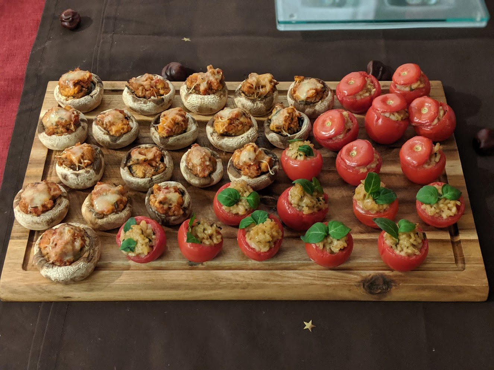

..@..♦.D.

|
Présentation 
|
Blog
|
Recettes
|

Ici avec des petits [champignons farcis](LegumesFarcis.html)
Pour 15 mini-farcis :
Remarque : c'est une manière stylée d'utiliser un reste de risotto. J'aime bien le faire avec du risotto aux champignons, ça va bien avec les tomates et ça donne une excuse pour manger tous les champignons et ne laisser que le riz :D Mais on peut adapter ça avec n'importe quel risotto qui va bien avec les tomates.